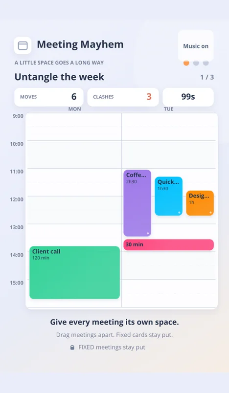
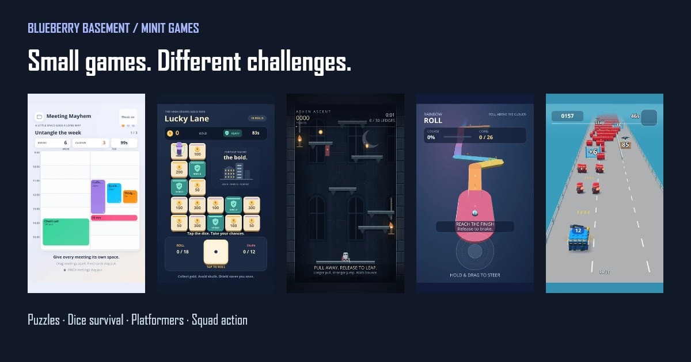
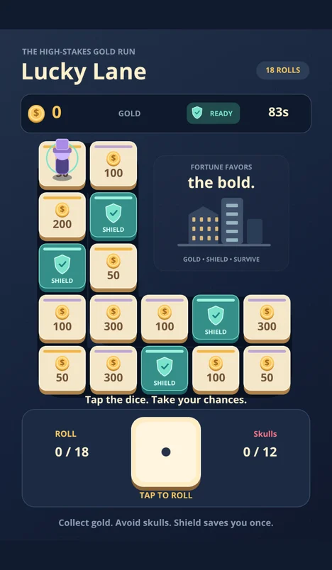
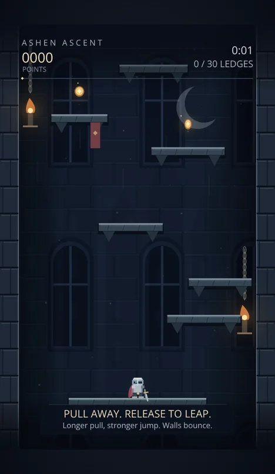
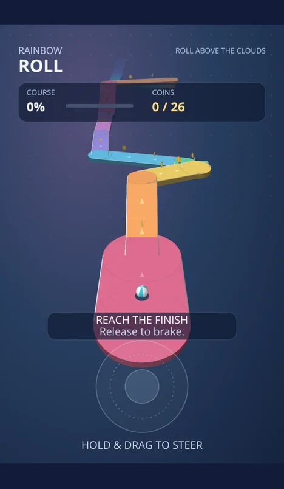
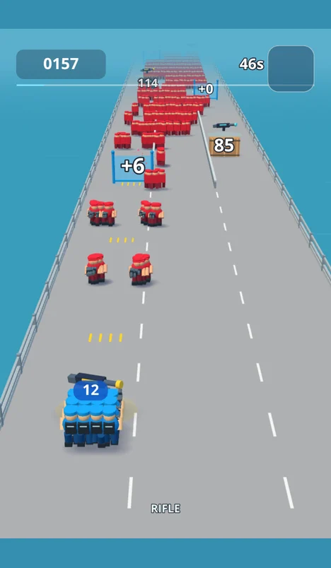

Calendar puzzle
Meeting Mayhem
Move meetings, work around locked events and clear calendar overlaps. A compact adaptation of our Android puzzle game.
Play Meeting Mayhem →Blueberry Basement on Minit Games
Untangle calendars. Risk another roll. Climb for a crown. We make short-form games for Minit, alongside Meeting Mayhem on Android.
Find your next game ↓Find us on Minit as @blueberrybasement.

Choose a game
Each play link opens a published Minit Post. Other Posts can offer different levels, layouts or difficulty settings.

Calendar puzzle
Move meetings, work around locked events and clear calendar overlaps. A compact adaptation of our Android puzzle game.
Play Meeting Mayhem →
Dice and survival
Roll around a gold-filled board as safe spaces turn into skulls. Shields protect a landing, but every roll changes the risk.
Play Lucky Lane →
Climbing platformer
Aim each jump and climb from ledge to ledge toward the crown. A missed landing can end the run.
Play Ashen Ascent →
3D ball platformer
Guide a ball across winding paths, narrow bridges and steep ramps. Collect coins while keeping enough control to reach the finish.
Play Rainbow Roll →
Squad shooter
Steer an automatically firing squad, recruit soldiers and collect stronger weapons. Dodge enemy attacks and fight through to the bosses.
Play Riot Road →A complete little session
Minit Games is a platform for short-form games in a feed. Our games focus on one clear challenge, touch controls and an ending within the session. They are published as playable Posts.
Choose a game above. The official Minit play link opens the app when supported, or the web player. Follow Minit’s access prompts on your device; you do not need to install each individual game.
Meeting Mayhem also has a separate Android app on Google Play with progression, daily tasks and rewards. Compare the two versions.
From the studio
Studio notes
Why Blueberry Basement is building for Minit Games: short, self-contained games, touch controls and different challenges from one game.
Game collection
Explore five Blueberry Basement games on Minit Games, with gameplay summaries and direct play links for puzzles, platformers, dice survival and shooting.
Game design
Compare Meeting Mayhem on Google Play with its Minit adaptation: the same calendar puzzle idea, with different session structure and surrounding features.